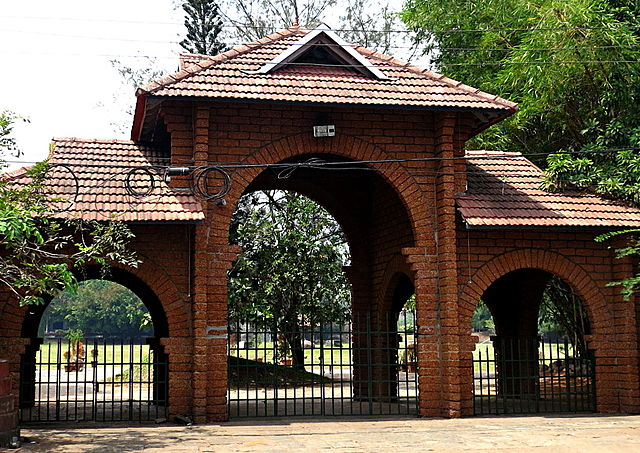
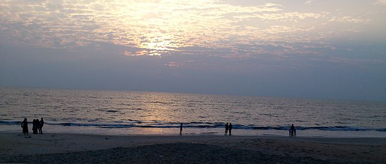
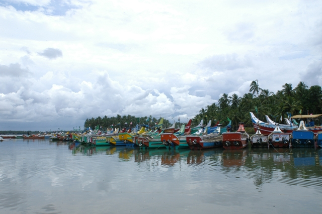
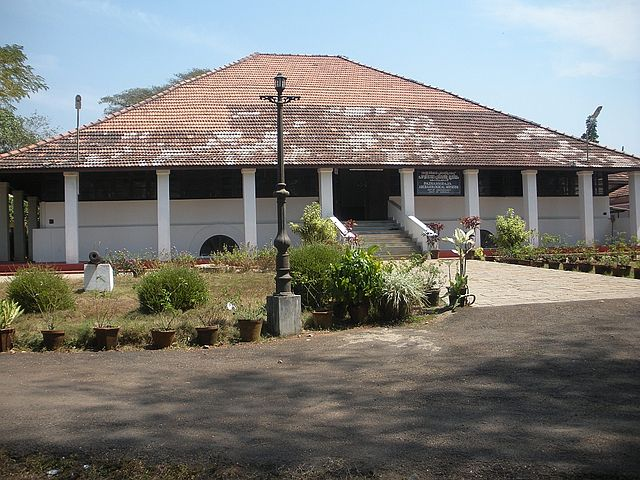
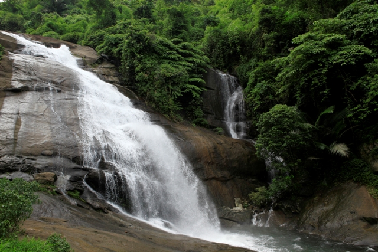

Formerly known as Calicut, Kozhikode is located in Kerala. It was the Capital of Malabar during the Zamorin rule 500 years ago and is famous for its centuries-old trade in cotton and spices with Jews, Arabs, Phoenicians and Chinese.Basking in the idyllic setting of the serene Arabian Sea on the west and the proud peaks of the Wayanad hills on the east, this district with the serene beaches, lush green countryside, historic sites, all combine to make Kozhikode a popular tourist destination.
1.Mananchira Square
This forms the heart of the city. The name comes from the large pool of clear water bound by laterite stone steps built by Manavedan Raja one of the earlier Zamorins. The park around it is tastefully kept with types of palms, trees and shrubs. Recently there is a move to adorn the city with sculptures and a number of them has come up here. There is an open air theater and a musical fountain. The view of the city from a corner of Mananchira is beautiful indeed! The spire of the Church adds to the beauty.

2.Kappad Beach
Definitely a beautiful beach about 20 km from Calicut. Its historical importance stems from the fact that Vasco da Gama with his sailors landed here in 1498 in 3 ships. This was the start of economic relationship between Europeans and this part of India now called Kerala. Quench your thirst with the nature-flavored tender coconut water which is healthful.

3.Beypore
Located 10 km from Calicut, is this ship-building port of Beypore. It is also one of of the busiest fishing harbors in Kerala. It was known as such centuries ago. The skilled workmen use the best of wood and build huge “Uru” for those who place orders. Even the rivets used are wooden. Their clientele were the Arabs who sailed a lot for trade. Such Urus used to be unloaded at the Calicut port using Cranes. We can see the making of an Uru and also the finished product.

4.Pazhassi Raja Museum and Art Gallery
Named after the brave ruler who dared to fight the British with the help of tribal warriors, this museum displays old coins, mural paintings and monuments. Art Gallery has some excellent paintings, some by Raja Ravi Varma the old master painter. It is near the city centre.

5.Thusharagiri Waterfalls
For those who are lovers of Nature , a visit to Thusharagiri Waterfalls about 50 km away is gainful. Far from the mad crowd this waterfall springs from the high hills among the green forests. You feel cool and fresh. if fond of trekking you can trek to reach the waterfall. A bath in the big pool is heavenly!
